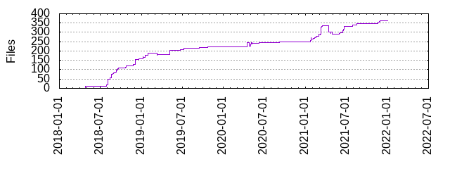

Files
- Total files
- 362
- Total lines
- 20009
- Average file size
- 2115.69 bytes

| Extension | Files (%) | Lines (%) | Lines/file |
|---|
| 23 (6.35%) | 632 (3.16%) | 27 |
| bazel | 100 (27.62%) | 3721 (18.60%) | 37 |
| bzl | 75 (20.72%) | 11693 (58.44%) | 155 |
| c | 13 (3.59%) | 76 (0.38%) | 5 |
| cc | 4 (1.10%) | 99 (0.49%) | 24 |
| cpp | 25 (6.91%) | 583 (2.91%) | 23 |
| h | 18 (4.97%) | 123 (0.61%) | 6 |
| in | 1 (0.28%) | 11 (0.05%) | 11 |
| java | 1 (0.28%) | 28 (0.14%) | 28 |
| md | 15 (4.14%) | 812 (4.06%) | 54 |
| ninja | 1 (0.28%) | 44 (0.22%) | 44 |
| patch | 12 (3.31%) | 355 (1.77%) | 29 |
| png | 11 (3.04%) | 297 (1.48%) | 27 |
| py | 3 (0.83%) | 449 (2.24%) | 149 |
| sh | 10 (2.76%) | 126 (0.63%) | 12 |
| toml | 2 (0.55%) | 10 (0.05%) | 5 |
| txt | 33 (9.12%) | 522 (2.61%) | 15 |
| vm | 1 (0.28%) | 3 (0.01%) | 3 |
| xml | 10 (2.76%) | 281 (1.40%) | 28 |
| yaml | 4 (1.10%) | 369 (1.84%) | 92 |